OC[C@H]1OC(O)[C@H](O)[C@@H](O)[C@@H]1OComplete available SI preparative SchemesS1-S7 from glucose and cited protected acids1/6. Original DOCX exported read-only by Word to derived PDF; locators are actual derived-PDF pages. Stability assays are not isolated synthetic steps. Facts compiled deterministically; independent review pending.
完整 JSON · 逐步 CSV · 路线序列 · SDF · HRMS 核对
| 事件 | 分子连接 | 报告产率 | Canonical reaction SMILES |
|---|---|---|---|
| A01 | D-glucose + 1 → 2 | 2: 60.8% | C=C(CCOCc1ccc(OC)cc1)C(=O)O.OC[C@H]1OC(O)[C@H](O)[C@@H](O)[C@@H]1O>>C=C(CCOCc1ccc(OC)cc1)C(=O)O[C@@H]1O[C@H](CO)[C@@H](O)[C@H](O)[C@H]1O |
| A02 | 2 → 3 | not reported | C=C(CCOCc1ccc(OC)cc1)C(=O)O[C@@H]1O[C@H](CO)[C@@H](O)[C@H](O)[C@H]1O>>C=C(CCOCc1ccc(OC)cc1)C(=O)O[C@@H]1O[C@H](CO[Si](C)(C)C)[C@@H](O[Si](C)(C)C)[C@H](O[Si](C)(C)C)[C@H]1O[Si](C)(C)C |
| A03 | 3 → 4 | 4: 66% | C=C(CCOCc1ccc(OC)cc1)C(=O)O[C@@H]1O[C@H](CO[Si](C)(C)C)[C@@H](O[Si](C)(C)C)[C@H](O[Si](C)(C)C)[C@H]1O[Si](C)(C)C>>C=C(CCOCc1ccc(OC)cc1)C(=O)O[C@@H]1O[C@H](CO)[C@@H](O[Si](C)(C)C)[C@H](O[Si](C)(C)C)[C@H]1O[Si](C)(C)C |
| B01 | D-glucose + 6 → 8 | not reported | C=C(C(=O)O)[C@@H](COCc1ccc(OC)cc1)O[Si](C)(C)C(C)(C)C.OC[C@H]1OC(O)[C@H](O)[C@@H](O)[C@@H]1O>>C=C(C(=O)O[C@@H]1O[C@H](CO)[C@@H](O)[C@H](O)[C@H]1O)[C@@H](COCc1ccc(OC)cc1)O[Si](C)(C)C(C)(C)C |
| B02 | 8 → 9 | not reported | C=C(C(=O)O[C@@H]1O[C@H](CO)[C@@H](O)[C@H](O)[C@H]1O)[C@@H](COCc1ccc(OC)cc1)O[Si](C)(C)C(C)(C)C>>C=C(C(=O)O[C@@H]1O[C@H](CO[Si](C)(C)C)[C@@H](O[Si](C)(C)C)[C@H](O[Si](C)(C)C)[C@H]1O[Si](C)(C)C)[C@@H](COCc1ccc(OC)cc1)O[Si](C)(C)C(C)(C)C |
| B03 | 9 → 10 | not reported | C=C(C(=O)O[C@@H]1O[C@H](CO[Si](C)(C)C)[C@@H](O[Si](C)(C)C)[C@H](O[Si](C)(C)C)[C@H]1O[Si](C)(C)C)[C@@H](COCc1ccc(OC)cc1)O[Si](C)(C)C(C)(C)C>>C=C(C(=O)O[C@@H]1O[C@H](CO)[C@@H](O[Si](C)(C)C)[C@H](O[Si](C)(C)C)[C@H]1O[Si](C)(C)C)[C@@H](COCc1ccc(OC)cc1)O[Si](C)(C)C(C)(C)C |
| D01 | 4 + 1 → 5 | 5: 30.2% | C=C(CCOCc1ccc(OC)cc1)C(=O)O.C=C(CCOCc1ccc(OC)cc1)C(=O)O[C@@H]1O[C@H](CO)[C@@H](O[Si](C)(C)C)[C@H](O[Si](C)(C)C)[C@H]1O[Si](C)(C)C>>C=C(CCOCc1ccc(OC)cc1)C(=O)OC[C@H]1O[C@@H](OC(=O)C(=C)CCOCc2ccc(OC)cc2)[C@H](O[Si](C)(C)C)[C@@H](O[Si](C)(C)C)[C@@H]1O[Si](C)(C)C |
| D02 | 5 → PosD | PosD: 49.3% | C=C(CCOCc1ccc(OC)cc1)C(=O)OC[C@H]1O[C@@H](OC(=O)C(=C)CCOCc2ccc(OC)cc2)[C@H](O[Si](C)(C)C)[C@@H](O[Si](C)(C)C)[C@@H]1O[Si](C)(C)C>>C=C(CCO)C(=O)OC[C@H]1O[C@@H](OC(=O)C(=C)CCO)[C@H](O)[C@@H](O)[C@@H]1O |
| F01 | 4 + 6 → 7 | 7: 27.4% | C=C(C(=O)O)[C@@H](COCc1ccc(OC)cc1)O[Si](C)(C)C(C)(C)C.C=C(CCOCc1ccc(OC)cc1)C(=O)O[C@@H]1O[C@H](CO)[C@@H](O[Si](C)(C)C)[C@H](O[Si](C)(C)C)[C@H]1O[Si](C)(C)C>>C=C(CCOCc1ccc(OC)cc1)C(=O)O[C@@H]1O[C@H](COC(=O)C(=C)[C@@H](COCc2ccc(OC)cc2)O[Si](C)(C)C(C)(C)C)[C@@H](O[Si](C)(C)C)[C@H](O[Si](C)(C)C)[C@H]1O[Si](C)(C)C |
| F02 | 7 → PosF | PosF: 29.3% | C=C(CCOCc1ccc(OC)cc1)C(=O)O[C@@H]1O[C@H](COC(=O)C(=C)[C@@H](COCc2ccc(OC)cc2)O[Si](C)(C)C(C)(C)C)[C@@H](O[Si](C)(C)C)[C@H](O[Si](C)(C)C)[C@H]1O[Si](C)(C)C>>C=C(CCO)C(=O)O[C@@H]1O[C@H](COC(=O)C(=C)[C@H](O)CO)[C@@H](O)[C@H](O)[C@H]1O |
| I01 | 10 + 1 → 11 | not reported | C=C(C(=O)O[C@@H]1O[C@H](CO)[C@@H](O[Si](C)(C)C)[C@H](O[Si](C)(C)C)[C@H]1O[Si](C)(C)C)[C@@H](COCc1ccc(OC)cc1)O[Si](C)(C)C(C)(C)C.C=C(CCOCc1ccc(OC)cc1)C(=O)O>>C=C(CCOCc1ccc(OC)cc1)C(=O)OC[C@H]1O[C@@H](OC(=O)C(=C)[C@@H](COCc2ccc(OC)cc2)O[Si](C)(C)C(C)(C)C)[C@H](O[Si](C)(C)C)[C@@H](O[Si](C)(C)C)[C@@H]1O[Si](C)(C)C |
| I02 | 11 → isoPosF | isoPosF: 8.1% | C=C(CCOCc1ccc(OC)cc1)C(=O)OC[C@H]1O[C@@H](OC(=O)C(=C)[C@@H](COCc2ccc(OC)cc2)O[Si](C)(C)C(C)(C)C)[C@H](O[Si](C)(C)C)[C@@H](O[Si](C)(C)C)[C@@H]1O[Si](C)(C)C>>C=C(CCO)C(=O)OC[C@H]1O[C@@H](OC(=O)C(=C)[C@H](O)CO)[C@H](O)[C@@H](O)[C@@H]1O |
| H01 | 10 + 6 → 12 | 12: 17.5% | C=C(C(=O)O)[C@@H](COCc1ccc(OC)cc1)O[Si](C)(C)C(C)(C)C.C=C(C(=O)O[C@@H]1O[C@H](CO)[C@@H](O[Si](C)(C)C)[C@H](O[Si](C)(C)C)[C@H]1O[Si](C)(C)C)[C@@H](COCc1ccc(OC)cc1)O[Si](C)(C)C(C)(C)C>>C=C(C(=O)OC[C@H]1O[C@@H](OC(=O)C(=C)[C@@H](COCc2ccc(OC)cc2)O[Si](C)(C)C(C)(C)C)[C@H](O[Si](C)(C)C)[C@@H](O[Si](C)(C)C)[C@@H]1O[Si](C)(C)C)[C@@H](COCc1ccc(OC)cc1)O[Si](C)(C)C(C)(C)C |
| H02 | 12 → diOH-PosD | diOH-PosD: 10.5% | C=C(C(=O)OC[C@H]1O[C@@H](OC(=O)C(=C)[C@@H](COCc2ccc(OC)cc2)O[Si](C)(C)C(C)(C)C)[C@H](O[Si](C)(C)C)[C@@H](O[Si](C)(C)C)[C@@H]1O[Si](C)(C)C)[C@@H](COCc1ccc(OC)cc1)O[Si](C)(C)C(C)(C)C>>C=C(C(=O)OC[C@H]1O[C@@H](OC(=O)C(=C)[C@H](O)CO)[C@H](O)[C@@H](O)[C@@H]1O)[C@H](O)CO |
| M01 | 8 → 1-PosB | 1-PosB: 28.8% | C=C(C(=O)O[C@@H]1O[C@H](CO)[C@@H](O)[C@H](O)[C@H]1O)[C@@H](COCc1ccc(OC)cc1)O[Si](C)(C)C(C)(C)C>>C=C(C(=O)O[C@@H]1O[C@H](CO)[C@@H](O)[C@H](O)[C@H]1O)[C@H](O)CO |
OC[C@H]1OC(O)[C@H](O)[C@@H](O)[C@@H]1O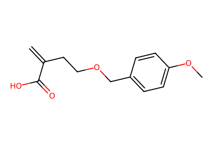
C=C(CCOCc1ccc(OC)cc1)C(=O)O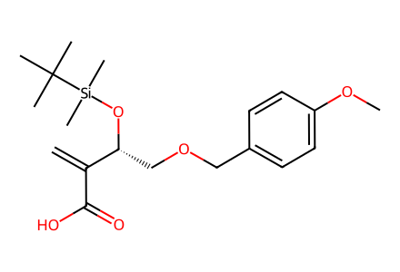
C=C(C(=O)O)[C@@H](COCc1ccc(OC)cc1)O[Si](C)(C)C(C)(C)C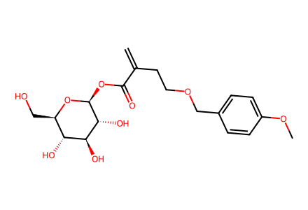
C=C(CCOCc1ccc(OC)cc1)C(=O)O[C@@H]1O[C@H](CO)[C@@H](O)[C@H](O)[C@H]1O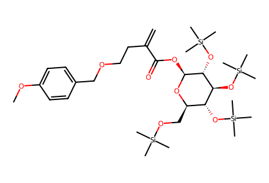
C=C(CCOCc1ccc(OC)cc1)C(=O)O[C@@H]1O[C@H](CO[Si](C)(C)C)[C@@H](O[Si](C)(C)C)[C@H](O[Si](C)(C)C)[C@H]1O[Si](C)(C)C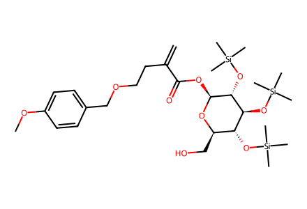
C=C(CCOCc1ccc(OC)cc1)C(=O)O[C@@H]1O[C@H](CO)[C@@H](O[Si](C)(C)C)[C@H](O[Si](C)(C)C)[C@H]1O[Si](C)(C)C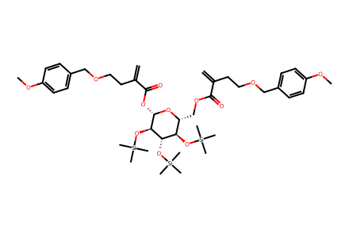
C=C(CCOCc1ccc(OC)cc1)C(=O)OC[C@H]1O[C@@H](OC(=O)C(=C)CCOCc2ccc(OC)cc2)[C@H](O[Si](C)(C)C)[C@@H](O[Si](C)(C)C)[C@@H]1O[Si](C)(C)C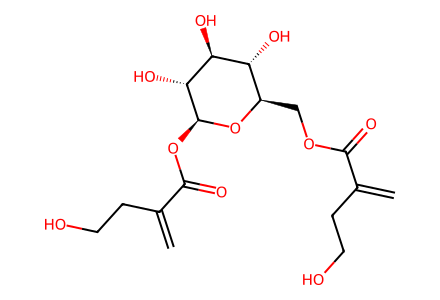
C=C(CCO)C(=O)OC[C@H]1O[C@@H](OC(=O)C(=C)CCO)[C@H](O)[C@@H](O)[C@@H]1O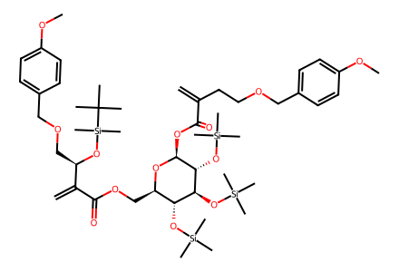
C=C(CCOCc1ccc(OC)cc1)C(=O)O[C@@H]1O[C@H](COC(=O)C(=C)[C@@H](COCc2ccc(OC)cc2)O[Si](C)(C)C(C)(C)C)[C@@H](O[Si](C)(C)C)[C@H](O[Si](C)(C)C)[C@H]1O[Si](C)(C)C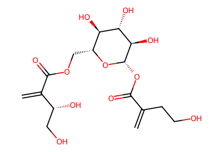
C=C(CCO)C(=O)O[C@@H]1O[C@H](COC(=O)C(=C)[C@H](O)CO)[C@@H](O)[C@H](O)[C@H]1O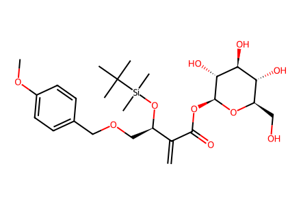
C=C(C(=O)O[C@@H]1O[C@H](CO)[C@@H](O)[C@H](O)[C@H]1O)[C@@H](COCc1ccc(OC)cc1)O[Si](C)(C)C(C)(C)C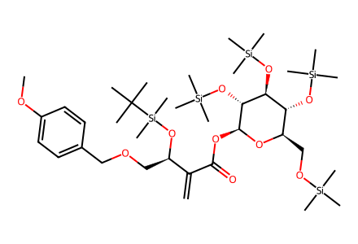
C=C(C(=O)O[C@@H]1O[C@H](CO[Si](C)(C)C)[C@@H](O[Si](C)(C)C)[C@H](O[Si](C)(C)C)[C@H]1O[Si](C)(C)C)[C@@H](COCc1ccc(OC)cc1)O[Si](C)(C)C(C)(C)C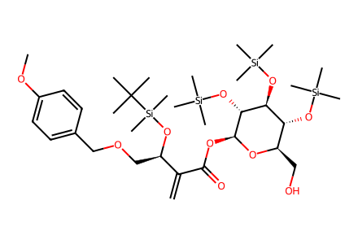
C=C(C(=O)O[C@@H]1O[C@H](CO)[C@@H](O[Si](C)(C)C)[C@H](O[Si](C)(C)C)[C@H]1O[Si](C)(C)C)[C@@H](COCc1ccc(OC)cc1)O[Si](C)(C)C(C)(C)C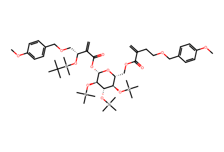
C=C(CCOCc1ccc(OC)cc1)C(=O)OC[C@H]1O[C@@H](OC(=O)C(=C)[C@@H](COCc2ccc(OC)cc2)O[Si](C)(C)C(C)(C)C)[C@H](O[Si](C)(C)C)[C@@H](O[Si](C)(C)C)[C@@H]1O[Si](C)(C)C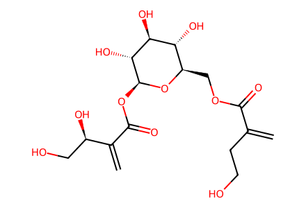
C=C(CCO)C(=O)OC[C@H]1O[C@@H](OC(=O)C(=C)[C@H](O)CO)[C@H](O)[C@@H](O)[C@@H]1O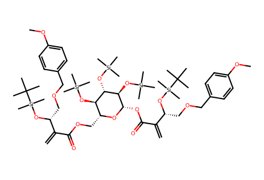
C=C(C(=O)OC[C@H]1O[C@@H](OC(=O)C(=C)[C@@H](COCc2ccc(OC)cc2)O[Si](C)(C)C(C)(C)C)[C@H](O[Si](C)(C)C)[C@@H](O[Si](C)(C)C)[C@@H]1O[Si](C)(C)C)[C@@H](COCc1ccc(OC)cc1)O[Si](C)(C)C(C)(C)C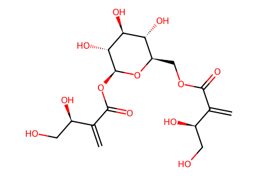
C=C(C(=O)OC[C@H]1O[C@@H](OC(=O)C(=C)[C@H](O)CO)[C@H](O)[C@@H](O)[C@@H]1O)[C@H](O)CO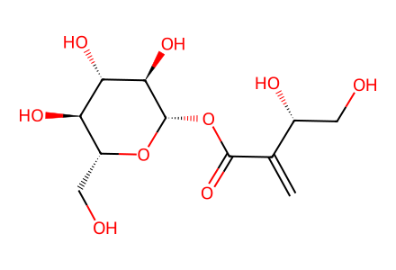
C=C(C(=O)O[C@@H]1O[C@H](CO)[C@@H](O)[C@H](O)[C@H]1O)[C@H](O)CO